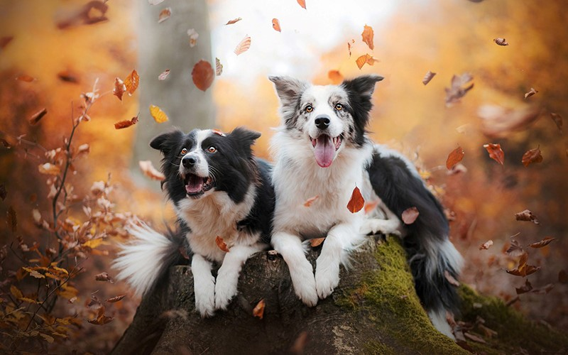

Đặc điểm chó Golden
Ngoại hình
Kích thước: Khi trưởng thành, chó Border đạt chiều cao từ 46 – 56cm. Trong đó, chiều cao trung bình của chó cái là 52cm, chó đực là 54cm.
Cân nặng: Nếu được chăm sóc tốt, Border Collie có thể lên đến 35kg, tỉ lệ giữa chiều cao và cân nặng của chúng được đánh giá là khá cân đối.
Đầu và mặt: Kết cấu xương đầu chó Border Collie khá nhỏ nên trông gọn gàng, ngũ quan trên gương mặt sắc nét, rất tinh khôn, đặc biệt là đôi mắt có ánh nhìn sắc sảo.
Tai: Chó chăn cừu Border Collie không có tiêu chuẩn cụ thể dành cho tai vì tai thường có kích thước tầm trung, cụp xuống hay dựng đứng lên còn tùy thuộc vào trạng thái của chúng.
Lông: So với Pitbull, lông chó Border Collie dài mượt và dày hơn. Bộ lông này giúp chúng sưởi ấm cơ thể khi thời tiết trở lạnh và cũng có công dụng cách nhiệt nếu khí hậu nóng bức. Màu lông chó Border Collie khá đa dạng, phổ biến nhất là trắng – xanh, trắng – đen hoặc trắng – đỏ…
Thân hình: Cân đối, phần ngực đầy đặn nhưng eo thon giúp mang lai vẻ đẹp vừa mạnh mẽ vừa mềm mại.
Chân: Dài, thon và chắc khỏe, thường có dấu huyền đề.
Tính cách
Border Collie thông minh nhất trong các dòng chó ở Scotland, học hỏi nhanh, dễ huấn luyện.
Thân thiện và sống hòa đồng với con người, rất vâng lời, thích được tán thưởng khi hoàn thành nhiệm vụ.
Khả năng chịu đựng cao, có xu hướng tìm những công việc áp lực.